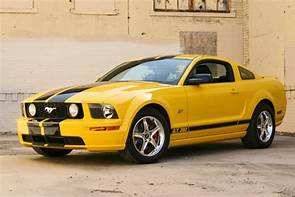
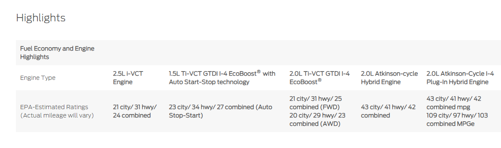

| FORD MUSTANG |
|---|
| 
Ford Mustang |
| Overview |
|
Manufacturer Ford |
A big part of the big picture. With gas, hybrid, and plug-in hybrid powertrain options, the 2010 Fusion is where technology, style and responsible driving meet. Hybrid and plug-in hybrid options can help improve your vehicle’s efficiency and total driving range.* In all-electric mode, the plug-in hybrid can even reduce CO2 emissions, helping leave a smaller footprint.
Key Features
:6-way manual driver's seat and 4-way manual passenger seat Open image overlay for 6-way manual driver's seat and 4-way manual passenger seat
:Fold-down Split Rear Seat-back (60/40) Open image overlay for Fold-down Split Rear Seat-back (60/40)
:Seat Back Map Pockets - Passenger
:Manual Climate Control
:Cabin Particulate Air Filter
:Dual-Zone Electronic Automatic Temperature Control (DEATC) with Rear A/C and Heat Vents
|  |